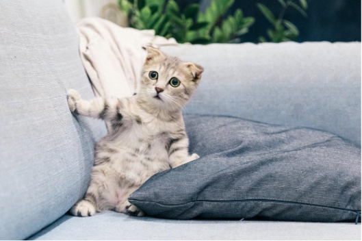

Evidence-based pet care advice for every pet lover
 The felis silvestris catus, commonly known as a cat, is a very interesting species. It is believed
they
began being domesticated around 7500 B.C. in the western Asia region, and currently they are
considered the
second-most popular domestic pet in the United States. While there are over 60 unique documented cat
breeds,
their care and diet can be very different. However, there are some diets and practices that are
generally
recommended for the well-being of your fluffy family member.
The felis silvestris catus, commonly known as a cat, is a very interesting species. It is believed
they
began being domesticated around 7500 B.C. in the western Asia region, and currently they are
considered the
second-most popular domestic pet in the United States. While there are over 60 unique documented cat
breeds,
their care and diet can be very different. However, there are some diets and practices that are
generally
recommended for the well-being of your fluffy family member.
0 - 4 Weeks
If the queen (yes, it is a term commonly used for a female cat that is either pregnant or nursing) is able to nurse the kitten directly, that is preferred. The kittens' growth should be monitored closely to make sure their growth rate is progressing steadily. If the kitten(s) are not growing at a sufficient rate, a caretaker might need to feed the kitten(s) directly either with a bottle or a feeding tube. Some reasons why kittens might not gain weight appropriately include:

- Too many other siblings are competing for mom's milk
- Gastrointestinal disease
- Environmental conditions such as extreme heat or cold, or unsanitary conditions
4 Weeks - 1 Year
Typically, around 3–4 weeks after birth, the kitten can start being introduced to soft wet kitten food. According to ASPCA, kittens at this age should eat 0.5–1 cup dry kitten food, or 6–9 ounces of wet kitten food, per day. Experts recommend that if the kitten has difficulties eating hard food, a small amount of water can be added to help. Cat food that is optimized for kittens is always preferred, as it provides the additional nutrients that are needed for growth, energy, and wellness. Depending on the cat breed, your kitten may have different dietary requirements. You should always consult with your veterinarian for recommendations.
1 Year - 7 Years
At this age, when kittens are no longer kittens and have reached the cat stage, they do not need as much nutrients. At this point, their level of activity decreases, and so does their metabolism. It is recommended that you NOT leave food out for the cats all day. Instead, provide food a couple times a day so they eat meals rather than snack throughout the day. This practice is intended to reduce the risk of the cats suffering from obesity and other weight-related ailments.
7 Years +
Much like many living organisms, the cat body begins to deteriorate and experience a lot of changes. Cats in this age should be fed fewer fats and calories, but more quality proteins. This mean when you are purchasing packaged foods for your cat, look for food that states a particular protein (such as "salmon") and NOT just a category (such as fish). The latter usually means the ingredients are byproducts, or combinations, of lesser quality proteins.


Evidence-based pet care advice for every pet lover